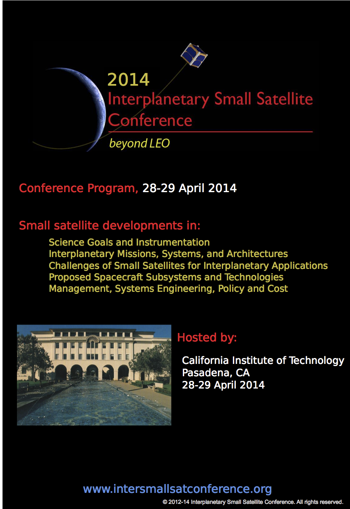

Materials ISSC 2014
Live Stream
Both days of the conference were live streamed online. To view the live stream, click here and enter password "SmlSat2014."
Conference Materials: 2014
Click here to download a PDF of the conference schedule.
| Session A: Mission Concepts | Session Chairs: A. Babuscia and J. Castillo | Presenter | Abstract Code |
| A.1 | BioSentinel: Enabling CubeSat-Scale Biological Research Beyond Low Earth Orbit | M. Sorgenfrei | A1-Sorgenfrei |
| A.2 | NEASCOUT: A CUBESAT ARCHITECTURE FOR NEAR EARTH ASTEROID (NEA) EXPLORATION | A. Frick | A2-Frick |
| A.3 | LUNAR FLASHLIGHT: A CUBESAT ARCHITECTURE FOR DEEP SPACE EXPLORATION | P. Banazadeh | A3-Banazadeh |
| A.4 | Interplanetary CubeSat Gravity and Bi-Static Radar Experiments: Uncovering the surface and subsurface features of Phobos | K. Oudrhiri | A4-Oudrhiri |
| A.5 | RAIDER CubeSat Platform for Deep Space Science Missions | N. Voronka | A5-Voronka |
| Session B: Communication Challenges | Session Chairs: K. Cheung and P. Estabrook | Presenter | Abstract Code |
| B.1 | Communication Challenges of Small Satellites for Interplanetary Applications | K. Lyanaugh | B1-Lyanaugh |
| B.2 | Communication and coverage analysis for a network of small satellites around Mars | A. Babuscia | B2-Babuscia |
| B.3 | Opportunistic MSPA: A Low-Cost Downlink Alternative for Deep Space Smallsats | D. Abraham | B3-Abraham |
| B.4 | Iris DSN Compatible Small Satellite Navigation and Communication Transponder | C. Duncan | B4-Duncan |
| B.5 | CubeSat Based Inflatable Antennas and Structures for Interplanetary Communication and Tracking | M. Ravichandran | B5-Ravichandran |
| Session C: Propulsion | Session Chairs: P. Zarifian and R. Staehle | Presenter | Abstract Code |
| C.1 | Delivering CubeSats to the Moon and Beyond with Electric Propulsion | D. Spence | C1-Spence |
| C.2 | The CubeSat Ambipolar Thruster: Earth Escape in a 3U CubeSat | B. Longmier | C2-Longmier |
| C.3 | Optimal Thrust and Attitude Control for an Earth-Escape CubeSat | S. Spangelo | C3-Spangelo |
| Session D: Constellations and Platforms | Session Chairs: F. Alibay and S. Mohan | Presenter | Abstract Code |
| D.1 | A Concept for a Constellation of CubeSats at the Lunar Lagrangian Point (LL1) for radio aperture interferometry measurements: network analysis and simulation | J. Finn | D1-Finn |
| D.2 | On the Formation of a CubeSat Constellation at the Earth-Moon L1 Libration Point | K. Gomez | D2-Gomez |
| D.3 | CubeSart networks beyond Earth: advanced mission concepts for the support of the human exploration beyond Mars | F. Nichele | D3-Nichele |
| D.4 | Optional Picosat Constellation Architectures | M. Boghosian | D4-Boghosian |
| Session E: Opportunities and Design | Session Chairs: C. Norton and S. Spangelo | Presenter | Abstract Code |
| E.1 | Insights on Interplanetary Aerodynamic Environments for Small Spacecraft | D. Dalle | E1-Dalle |
| E.2 | The HaWK Modular Solar Array System | P. vanHalle | E2-vanHalle |
| E.3 | TeamXc: JPL's Collaborative Design Team for SmallSats | P. Zarifian | E3-Zarifian |
| E.4 | Interorbital Systems: propelling Science and the Arts to LEO and Beyond | R. Milliron | E4-Milliron |
| E.5 | LunarCubes: Application of the CubeSat Paradigm to Lunar Missions | P. Clark | E5-Clark |
| Posters | Poster Title | Presenter | Abstract Code |
| P.1 | Dyson Precursors | J. VonPost | P1-VonPost |
| P.2/B.2 | Communication and coverage analysis for a network of small satellites around Mars | A. Babuscia | B2-Babuscia |
| P.3/D.1 | A Concept for a Constellation of CubeSats at the Lunar Lagrangian Point (LL1) for radio aperture interferometry measurements: network analysis and simulation | J. Finn | D1-Finn |
| P.4/D.2 | On the Formation of a CubeSat Constellation at the Earth-Moon L1 Libration Point | K. Gomez | D2-Gomez |
| P.5/B.5 | CubeSat Based Inflatable Antennas and Structures for Interplanetary Communication and Tracking | M. Ravichandran | B5-Ravichandran |
| P.6/E.3 | TeamXc: JPL's Collaborative Design Team for SmallSats | P. Zarifian | E3-Zarifian |
| P.7/A.4 | Interplanetary CubeSat Gravity and Bi-Static Radar Experiments: Uncovering the surface and subsurface features of Phobos | K. Oudrhiri | A4-Oudrhiri |
Conference Booklet
Click here to download a PDF of the conference booklet.

Conference Program
Click here to download a PDF of the conference program.
| Monday 28th April | Time |
| Exhibitors Start Setting Up | 8:00-9:00 |
| Registration open and initial coffee break with pastries | 8:30-9:30 |
| Keynote speaker: Jakob van Zyl | 9:30-10:20 |
| Break | 10:20-10:40 |
| Session A | 10:40-11:55 |
| Q&A for A | 11:55-12:20 |
| Lunch | 12:20-13:10 |
| Keynote speaker: David Miller | 13:10-14:00 |
| Session B | 14:00-15:15 |
| Q&A for B | 15:15-15:40 |
| Coffee break | 15:40-16:00 |
| Session C | 16:00-16:45 |
| Q&A for C | 16:45-17:05 |
| Keynote speaker: Prof. Shri Kulkarni | 17:05-17:55 |
| Dinner and social | 18:00-20:00 |
| Cleanup | 20:00-21:00 |
| Tuesday 29th April | Time |
| Registration | 9:00-9:30 |
| Keynote speaker: Ellen Stofan | 9:30-10:20 |
| Break | 10:20-10:40 |
| Session D | 10:40-11:40 |
| Q&A for D | 11:40-12:05 |
| Lunch | 12:05-13:10 |
| Session E | 13:10-14:25 |
| Q&A for E | 14:25-14:50 |
| Closing remarks | 14:50-15:00 |